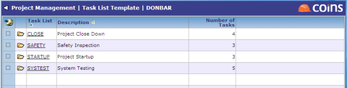
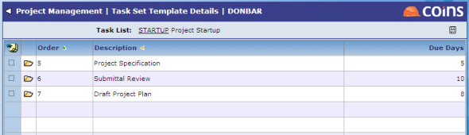

Templates
Each project can have a number of s - things that people need to do. Some of these lists will be the same (or similar) for all projects; for example: project start-up , health and safety visits. You can create templates that you can use in all projects.
To create templates:
- Go to List Template.
- Create a new list using a code and description.

- Click the link in the column to add items to the list.
